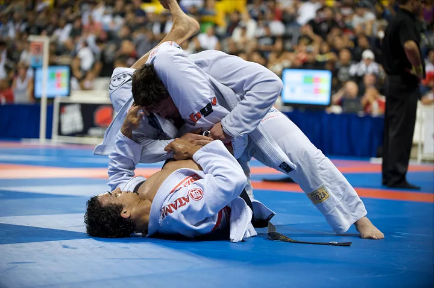
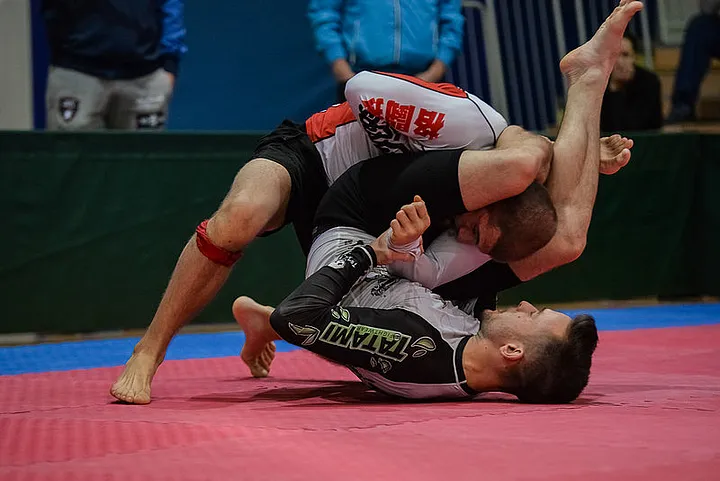
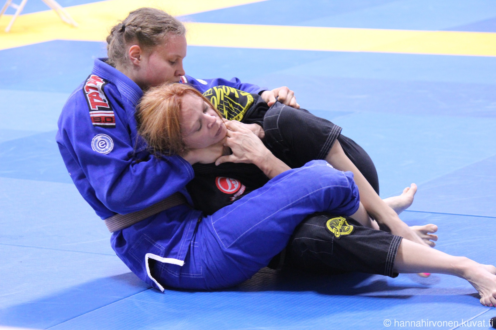
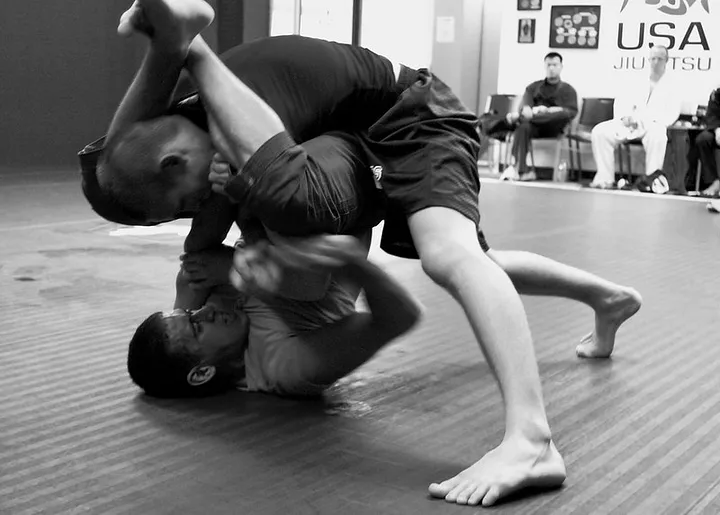
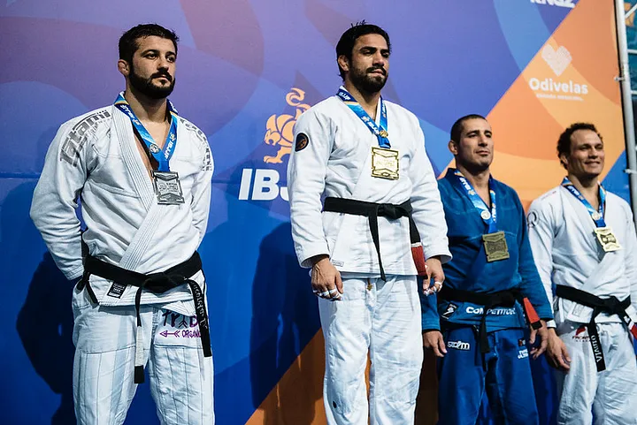
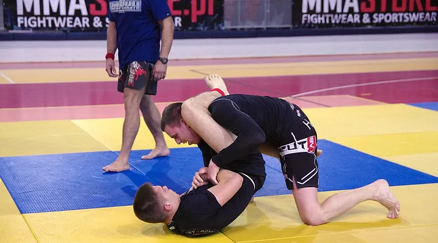
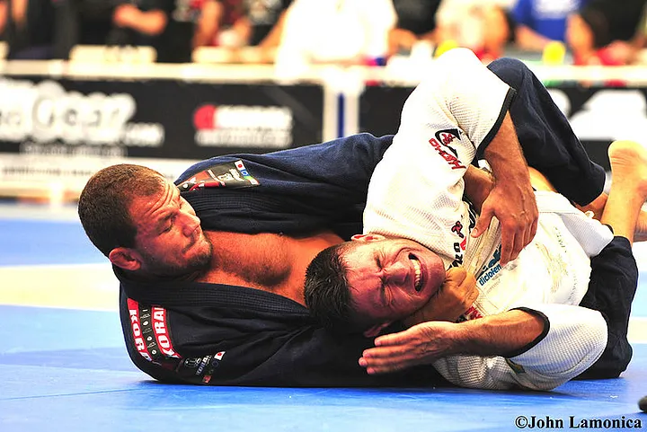
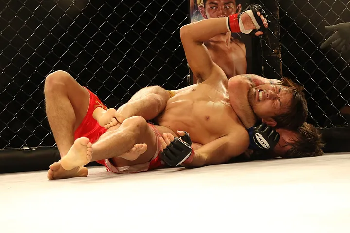

.png)

.png)
Whether you are a BJJ student or just a fan of the sport, you have likely heard about the debate between Gi and No Gi jiu jitsu training. As you may know, these are the two styles of grappling, with each one having its own pros and cons.
Over the years, many BJJ experts gave their opinion in an attempt to solve this heated debate. However, it seems like things are getting more confusing as time goes by.
For some people, Gi training will always be better because you can apply more techniques. And for the others, No Gi is a more realistic approach. It truly is a never-ending argument and we are not here to tell you which one is the best.
Instead, we have decided to bring you all the information you need about Gi and No Gi training so you can form your own opinion of it.
What is the main difference between Gi and No Gi?
The main difference between Gi and No Gi is in the clothing. Gi jiu jitsu is a grappling style in which you must wear a traditional Gi uniform. The Gi uniform consists of a coat and pants that are made out of thick cotton.
However, Gi is more than just a piece of clothing in jiu jitsu as it plays a crucial role in the way you carry out the techniques. You can use it to get a hold of the rival, execute various Judo throws, or submit them.
Gi jiu jitsu — source
On the other hand, No Gi is a BJJ style in which you don't have to wear a Gi uniform. Instead, students usually wear clothing made out of elastic materials like polyester. The most popular clothes among No Gi grapplers is the rash guard but you can also wear regular shorts and a T-shirt.
No Gi jiu jitsu — source
Many BJJ pros think this makes No Gi more practical in real life since we're not walking around wearing a Gi on the street. But this stays open for debate as the other side believes a Gi simulates regular streetwear you can grab during the street fight.
The differences in techniques
Gi and No Gi styles share a lot of same techniques. But they are a world apart when it comes to tactics and the way you carry out these techniques during the rolls.
First of all, training in a Gi allows you to grab the rival on both coat and pants. The most popular grip is the collar/sleeve grip which fighters use to control their opponent, hold the action, or set up the submission.
Photo by Hanna hirvonen
Further, Gi creates a lot of friction during the action, mostly when you and your partner are sweaty. This slows the action down and forces both parties to be more technical instead of using sheer strength and speed to win the grappling exchange. In some way, you have to think three steps in advance in Gi training and be much more methodical than in No Gi.
As you would expect, none of this exists in the world of No Gi jiu jitsu. Unlike in Gi training, you can't grab the rival on the cloth and there are just a few techniques you can use to slow the action. You must use wrestling based grips and rely on body mechanics, balance, and hand positioning to win. And, No Gi is a much faster style since there's less friction.
Photo by Mark Bonica found on Flickr
Differences in rules between Gi and No Gi competitions
It's important to note that there are plenty of Gi and No Gi competitions all around the world. In whatever style you train, there are enough tournaments and events in which you can test your skills.
Photo by Richard Persley found on Flickr
What's more, some of the best Brazilian jiu jitsu organizations include both styles. The most famous one is the International Brazilian Jiu jitsu Federation (IBJJF).
On the other hand, some most popular No Gi organizations like Abu Dhabi Combat Club (ADCC) keep the Gi rule as optional. Even though ADCC is known to be a No Gi contest, you can compete in a Gi if you want. But we have to point out that most of the fighters compete without the Gi.
Photo by Henrik Hovhannisyan found on Flickr
In a Gi competition, all entrants must wear a Gi uniform. Just like in training, both parties can grab or pull each other's Gi to get the advantage. In No Gi, however, you must perform wearing shorts, rash guard or a T-shirt.
Some of the other rules may vary when it comes to which techniques you can or cannot use in a match. For instance, the ADCC allows the notorious heel hooks while the IBJJF does not.
Advantages of Gi training
There are many benefits to Gi training. You will learn a lot of techniques you won't learn in No Gi training. For instance, Gi training teaches more sweeps, escapes, and various submissions you can't execute without the Gi.
So many people believe it is much easier for you to shift from Gi training to No Gi as you already know all the techniques needed for No Gi. On the other side, students who want to shift from No Gi must spend a lot of time getting used to wearing a Gi and how to use it.
Further, wearing a Gi makes training more difficult compared to No Gi. I mean, grabbing and pulling on a daily basis will really boost your strength and get your body in great shape. You can expect to improve both upper and lower body muscles after just a few months of Gi training.
The action in Gi training is also much slower which forces you to be tactical and methodical. It is often seen as the game of chess as you must use your mind and creativity to beat the rival. This is something that will sharpen your mind in the long run.
Advantages of No Gi training
No Gi is a far better style if you want to develop a strong grappling offense. It teaches you how to mix BJJ with wrestling techniques to put strong pressure on your opponents. You wll spend a lot of time learning how to use balance, hand positioning, and body mechanics.
This is just one of the reasons why No Gi has a big advantage over Gi when it comes to preparing for MMA matches.
As said earlier, the action is much faster in No Gi and the rolling sessions are often exhausting. This will certainly improve your cardio and endurance after just a few months of training. Over time, your reactions will also become much faster since you don't have much time to think during the rolls.
Gi or No Gi: Which one is better for beginners?
This is not an easy question to answer as it is almost impossible to put one style above the other. In fact, most of the BJJ schools offer classes in both styles because they depend on one another.
BJJ pros like John Danaher think that Gi training is good for beginners who want to develop a strong defense. And also, training in a Gi is a bit harder so you can improve your strength much faster than in No Gi. On the other side, No Gi classes are great for improving your grappling offense and increasing your cardio levels.
To be honest, the best way is to regularly train in both Gi and No Gi. This is not that hard since most schools offer classes in both styles and you can evenly split your training. And you can later determine which style suits you best.
Which style is better for MMA?
Many people think No Gi is better for MMA since the emphasis is on using a lot of wrestling moves. And, the concept of Gi training simply doesn't fit well into MMA because MMA fighters don't wear a Gi while fighting.
Photo by Maza Fight Galery found on Pixabay
The famous MMA coach, Firas Zahabi, also suggests No Gi is a better choice if you want to become an MMA fighter. According to Firas, this is because you can't apply some of the Gi- specific techniques in an MMA fight. But he also believes Gi training is good for developing strong defensive skills like the escapes or learning how to stop the rival from passing your guard.
Even though No Gi is better for MMA, most of the elite MMA fighters like Dustin Poirier train in both Gi and No Gi jiu jitsu.
Final Conclusion: Why Not Train Both Styles?
As said earlier, both Gi and No Gi have many benefits and it's hard to decide which of the two is better. But no one can deny that the best option is to train in both styles. This is the only way you can become a complete grappler. And training gets more exciting when you are mixing things up.
For instance, some of the techniques you learn in Gi training may help you in No Gi and vice versa. Or in the words of the BJJ master Marcelo Garcia:
Training in both styles will make you a much better grappler in the long run. It will prepare you for any type of scenario you may face in BJJ competition or while defending yourself on the streets. It will certainly correct all of your weaknesses and holes in your grappling game.
In the end, it really doesn't matter which style you choose if you are a beginner. The best option is to go to a school that offers classes in both Gi and No Gi jiu jitsu. Over time, you will see which style works better for you.